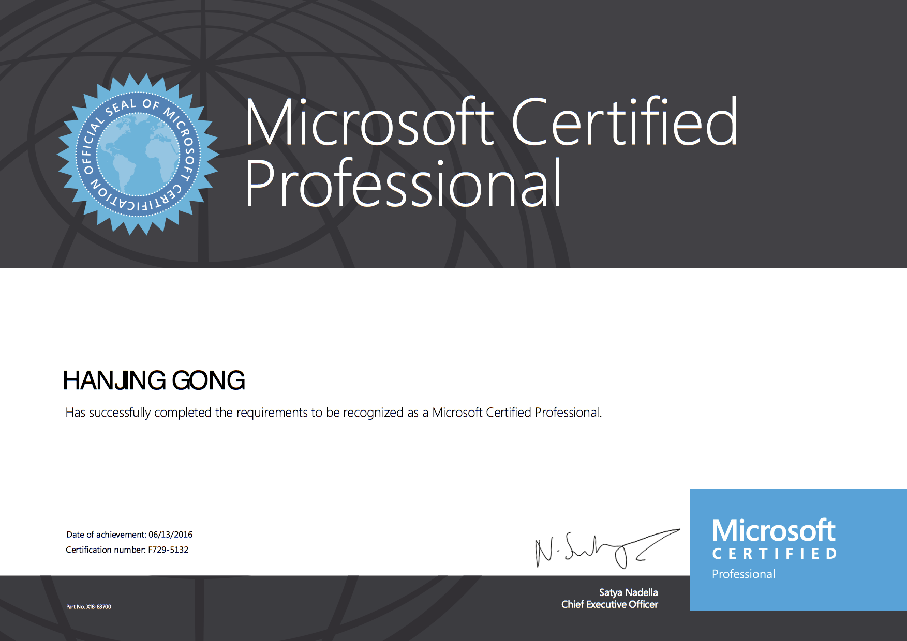
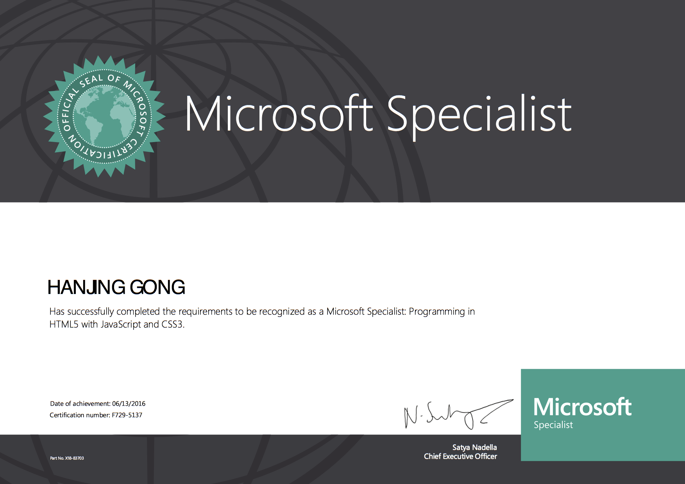

姓 名：richard.g
信仰：佛教
性别：男
出生年月：1987.09.06
民族：壮
政治面貌：群众
联系方式：18566779714
电子邮件:909253305@qq.com
期望从事职位： 资深java,node.js, javascript开发工程师
开源贡献:
npm模块贡献: https://www.npmjs.com/~richardgong1987
blog:https://coderwall.com/richardgong1987
github:https://github.com/richardgong1987
期望薪资：30+K
专业技能
英语能力
有两年多海外工作经验,英语生活环境;很强的英文技术文档阅读,写作能力;英文沟通无障碍.
java知识面:
(1)有扎实的java(如，反射机制，数据结构，动态代理，aop,nio等等）,javaweb基础,精通java
oop面向对象程序设计,java设计模式,精通http协议,熟练应用http协议,了解,TCP通讯协议,能自己研发轻量级java web框架，或者，各种应用技术框架
(2)熟悉javaweb servlet的应用,了解其源码及其原理
(3)熟悉应用spring-core及其原理
(4)熟悉整合并配置spring-core+spring-mvc+mybatis,spring-core+spring-mvc+hibernate四大框架
(5)精通mybatis应用，并，对mybatis源码有深入解刨
(6)熟悉应用hibernate及其原理
(7)熟悉应用spring-mvc及其原理
(8)熟悉tomcat，nginx配置
(10)熟悉基于springboot开发
（11）熟悉基于springcloud生态链下的微服务开发,如Eureka,zuul,jpa,mybatis,Ribbon等等
(12) 习惯于 基于 测试驱动开发 （TDD），强调系统的稳定和健壮
node知识面:
习惯于 基于 测试驱动开发 （TDD），强调系统的稳定和健壮
(1).熟悉typescript,ES6/ES7语法体系,熟悉typescript,ES6/ES7应用的各种细节。精通typescript,ES6/ES7面向对象编程,有扎实的javascript基础和精通其特性，熟悉底层各类框架开发
(2).熟悉node.js核心模块,如http,fs,cluser,os,path熟悉他们的各种应用细节,熟悉在核心模块下建立的开源模块源码
(3).熟悉node.js在linux端的部署和运维,熟悉node.js和nginx进行集群而达到负载均衡,熟悉使用webpack进行项目框架
(4).熟悉node.js与memecaced, redis的集成开发
(5).有扎实的javascript基础,精通node,javascript原生编程,熟悉javascript常用见游戏算法，常见游戏数据结构，精通javascript面向对象编程,熟悉javascript设计模式,熟悉nodejs服务开发
熟悉第三方框架运用和设计原理,如,express,koa,ejs,nunjunk.能轻松自定义业务框架.
(6).koa/express方面:透彻的解读过koa/express源码,熟悉koa/express架构原理,及源码,了解koa/express中间件
(7).熟悉基于typescript的Ionic3.x的开发, 熟悉使用cordova打android,ios包,跨域处理等等.
(8).熟练oracle, mysql等数据库，sql原生sql crud语句的编写.丰富的sql开发经验,熟练node.js orm第三方框架的使用
(9). 熟悉使用loopback4（typescript风格）的微服务框架开发
hybrid/webapp前端开发知识面:
习惯于 基于 测试驱动开发 （TDD），强调系统的稳定和健壮
(1).熟悉typescript,ES6/ES7新语法体系,熟悉typescript,ES6/ES7应用的各种细节。精通typescript,ES6/ES7面向对象编程
(2).精通ionic3.x以上的版本的开发，能独立开发整个混合式移动端应用。熟悉运用cordova native的模块，实现原生接口的应用。
(3).精通jquery的应用，熟悉jquery实现原理及其源码。
(4).熟悉vue的应用和vue原理和源码
(5).熟悉前端脚手架的运用，如：webpack,rollup,gulp,brower
(6).了解react native,reactjs的开发
(7).精通css2,css3样式开发
Unix/Linux shell知识面:
1.有比较扎实的shell编程基础，一解决常用的shell需求，了解linux系统操作与维护
2.了解基于linux系统的应用部署，负载均衡，持续集群等
SQL知识面:
- 1.熟悉mysql,表设计, CRUD增删改查操作。熟悉mysql性能优化,mysql管理,熟悉mangodb,redis nosql数据库操作
- 2.熟悉oracle 表设计,sql CRUD操作。
c知识面:
基本了解c语言基础，能c语言开发一些简单应用。
安全知识方面
1.理解计算机原理.如物理加法器,减法器,芯片原理,物理存储原理.机器码
2.理解汇编语言,能在x86架构下写汇编.
3.理解使用ido pro, ollydbg等反编译工具.
4.对常用黑客工具了解并使用.
其它知识面:
(1)精通 git/gitolite下的版本控制,项目组织,仓库建设与管理。自动化部署
(2）熟练使用maven管理项目和配置
(3)熟悉nigix服务器使用与配置。对其源码有一定的了解
工作经历及案例
2017-7-2018-2，深圳市惠点科技有限公司
职位:java后台开发技术负责人
汇报对象:CTO
技术栈:spring+springmvc+mybatis, 数据库： mysql
工作描述：
1.配置和整合全新的spring+springmvc+mybatis项目，重构公司的支柱项目
2.负责技术选型,技术架构，人员组织，任务安排。业务底层框架实现
3.负责云服务器部署和架设
2015-3-2017-6，海外某软件外包公司
职位:资深全栈工程师（兼项目经理)
汇报对象:公司总监
技术栈:spring+springmvc+Hibernate, 数据库：oracle, mysql, 前端ionic3.x
工作描述：
1. 带领新人，领导并正常迭代日常业务开发
2.总移动端app开发核心负责人,后台日志给维护，监控系统开发，使用springmvc进行服务端restfull api开发,使用ionic3.x 进行前端混合式开发. 进行业务开发,架构设计.
android,ios客户端打包.
3.协助相关开发人员解决技术疑难问题,推进滞后项目完成.
4.负责云服务器部署和架设
5.负责技术选型,技术架构
2014-6-2015-2, 阿里巴巴-支付宝上海分公司;
汇报对象:项目经理
项目名：(1).支付宝app彩票应用.(2)支付宝pc外部担保交易
技术栈:java spring hibernate,node.js
工作描述：
实现业务api,渲染jsp模板，
基于：测试驱动开发 （TDD）
1.修复长期存在的bug.
2.协助相关开发人员解决技术疑难问题
3.负责支付宝应用业务开发并担任开发小组长.
4.编写java渲染模板
2013-6-2014-5, 携程计算机中心
职位:移动端全栈工程师
职责:移动端架构设计和开发,服务端接口转化;
汇报对象:开发经理
项目名：携程无线
技术栈:java spring, hibernate 数据库：sql server. 前端框架:gruntjs,backbone,zepto,underscore，require
工作描述：
java restfull接口编写
(1).移动端负责技术选型,业务框架开发,部分组件开发
(2).基于phonegap进行移动端业务开发,日常bug跟进
主要成就：完成携程国际机票项目，国内机票项目，门票订购项目，火车票项目，攻略项目，周边游项目。自由行项目，酒店项目等一系列携程业务的开发。
2010-8-2013-5，群硕软件开发（上海）有限公司
职位:移动端开发工程师
汇报对象:项目经理
技术栈:spring,strut2,ibatis,nodejs数据库：mysql
工作描述:
根据客户公司提供的mockup描述，结合，客户（SAP）提供的api,实现mockup业务接口
主要成就：完成SAP外包项目之care circle。平均单个项目完成周期：8个月
教育经历
- 2007.9-2010.6 上海科技学院
所获国际认证
International Certificate
Microsoft Certified Professional

Microsoft Specialist

自我评价:
具有很强的团队精神，有良好的组织和协调能力，有强烈的集体荣誉感。
自学能力强，喜欢钻研新技术，敢于面对和克服困难。
具有较强的适应能力;纪律性强，工作积极配合;意志坚强;